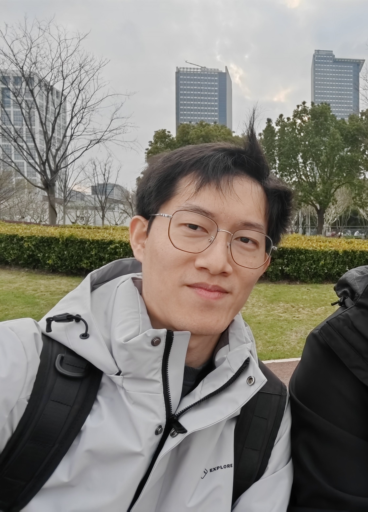

刘凯歌
华中科技大学(HUST) & 上海创智学院(SII)联合培养博士生
关于我
你好，欢迎来到我的个人主页。我目前的研究包括带有性格的可持续学习的具身智能体。已有的四足机器人容错控制、多台四足机器人集群与步态同步控制等。
技能与方向
- AI Agent
- 具身智能
- 强化学习
- 人形 / 四足机器人运动控制
联系方式
欢迎交流与合作：
Publications
- PEPA: a Persistently Autonomous Embodied Agent with Personalities
- Fault Joint Detection and Adaptive Fault-Tolerant Control of Legged Robots Under Joint Partial Failures
- Optimization-based flocking control and MPC-based Gait synchronization control for multiple quadruped robots
- Adaptive fault tolerant tracking control of heterogeneous multi-agent systems with non-cooperative target
- Fully distributed fixed-time control of cross-domain swarm robots for non-cooperative target tracking
- Adaptive sliding mode control for uncertain nonlinear multi-agent tracking systems subject to node failures